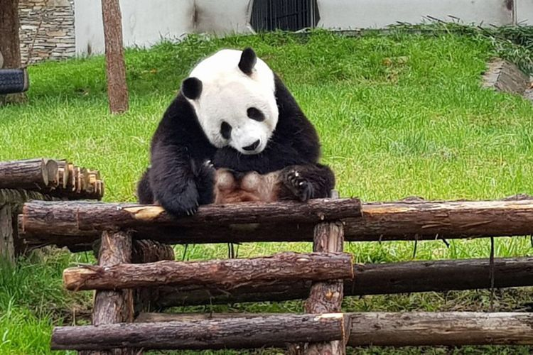

Angkut Panda raksasa, Garuda siapkan penerbangan bernuansa Panda
ERLANGGA DJUMENA
KabarKabur.com - 27/09/2017, 16:11 WIB

Panda yang akan dipindahkan habitatnya ke Indonesia. Panda ini diambil dari Wolong Panda Base, China.(TAMAN SAFARI INDONESIA)
Maskapai penerbangan Garuda Indonesia mempersiapkan penerbangan bertema panda pada rute Chengdu, China - Jakarta, Indonesia, Kamis (28/9/2017) pagi.Hal ini dalam rangka pengangkutan sepasang panda yakno Cai Tao dan Hu Chun dari China ke Indonesia."Headrest kami kasih panda semua, kaos gambar panda. Semua bernuasa panda. Bahkan sampai cake gambar kepala panda," kata Direktur Kargo Garuda, Sigit Muhartono di Wolong, China, Rabu (27/9/2017).Selain itu, lanjut Sigit, ada pin panda, headrest cover dan di luar pesawat diberi stiker sepasang panda itu. Sigit mengatakan, pihaknya pun melakukan perubahan rute (re-route) penerbangan reguler Chengdu-Jakarta supaya hewan warisan dunia itu bisa lebih cepat tiba di tujuan.Garuda sebut dia, biasanya melakukan penerbangan 3 kali seminggu dengan transit di Denpasar terlebih dahulu, sebelum ke Jakarta."Karena kami mendapatkan kehormatan mengangkut giant panda ini ke Indonesia, maka sebagai flight carrier kami bertanggung jawab penuh atas keselamatan panda selama transportasi di udara," ucapnya."Chengdu-Jakarta tentu saja punya pertimbangan khusus, flying hours kita jadi lebih cepat, lebih pendek sekitar 5 jam 20 menit. Sehingga risiko bahwa panda di atas pesawat lebih lama jadi lebih baik," kata Sigit.Menurut Sigit, pesawat yang mengangkut kedua panda ini adalah Airbus 330-200 wide body."Sisi operasional kami sesuai dengan standar internasional. Rekomendasi dari Airbus juga diperbolehkan untuk mengangkut life animals, jadi sudah dapat persiapan kemudian semua requirements yang dibutuhkan itu dapat sertifikasi bahwa panda ini bisa sampai ketinggian tertentu, dan pilotnya dapat minimum requirement yang dibutuhkan oleh panda dan pilotnya akan menyesuaikan," ungkapnya.Menurut Rencana, kedua panda raksasa ini akan diterbangkan Kamis (28/9/2017) pagi dari Chengdu menuju Jakarta.
Penulis : ERLANGGA DJUMENA
Editor : I Made Asdhian